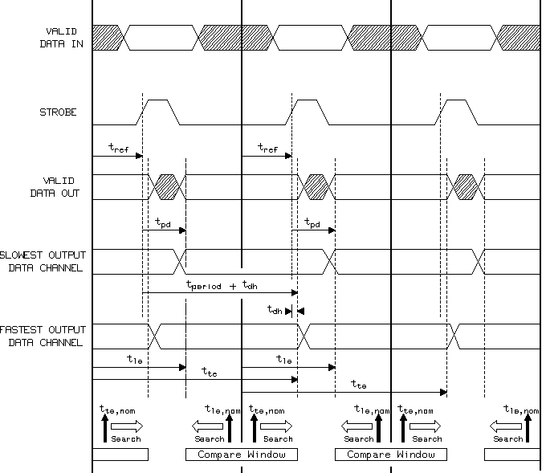
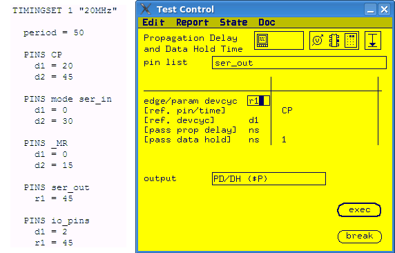
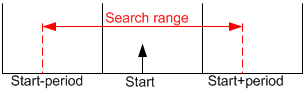

Output Data Hold Time conversion
The output data hold time can be pass/fail test or value test.
About this task
For pass/fail test, you can convert it to an
ac_tml.AcTest.functionalTest test method using the pass value in the test
function.
For value test, you can convert it to an
ac_tml.AcTest. parametricFunctionalTest test method. Firstly, you need to define
a timing spec to control the right neighbor edge (shifted edge) of the measured edge. Then you
can use it in ac_tml.AcTest.parametricFunctionalTest as the parameter to
shift.
In value test, the Output Data Hold Time test function tries to find the minimum time for which the output signals must retain their present state after the reference signal has validated new data. The definition of propagation delay time (tpd) and output data hold time (tdh) are shown in the figure below.

Procedure
Example
The following example shows how to convert a output data hold time to ac_tml.AcTest.parametricFunctionalTest. The timing setup used in the test function is shown on the left side of the test function.

In the example, the output data hold time is measured for edge r1 of pin group ser_out. The reference time is edge d1 of pin CP. If the measured output data hold time is larger than 1 ns, the measurement is pass.
To convert the output data hold time to
ac_tml.AcTest.parametricFunctionalTest, you need to:
- Define a spec output_hold to control the moved edge
r2
:PINS all_out r1 = 45 r2 = output_hold + 70
- The left boundary of r2 search range is nominal setup of r2 minus one period and the right boundary of r2 search range is nominal setup of r2 plus one period. The following figure shows the search range of r2.

Start position is pass_data_hold + period + reference_time = 1
+50+20 =71. So the search range of r2 is from start - period to start + period, which is from 21 to 121.
output_hold = r2 -70. So the search range of r2 is from -49 to 51.
ac_tml.AcTest.parametricFunctionalTest.|
spec |
output_hold |
|
resultPinList |
all_out |
|
resultPinListMode |
parallel |
|
setupPinList |
all_out |
|
setupPinListMode |
parallel |
|
method |
lin/bin |
|
start |
-49 |
|
stop |
51 |
|
step |
|
|
resolution |
|
|
passMin |
|
|
passMax |
1 |
Functional changes
- Introduced before SmarTest 6.3.2